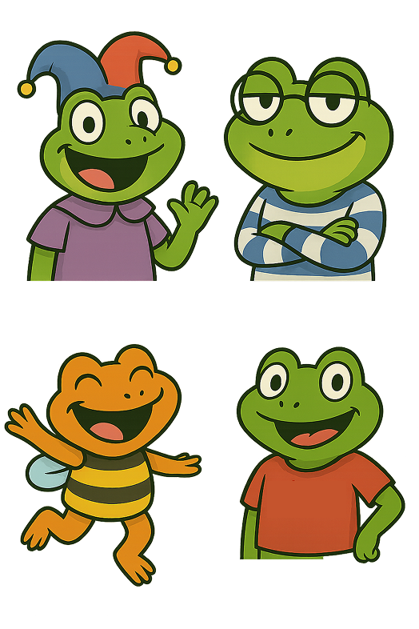
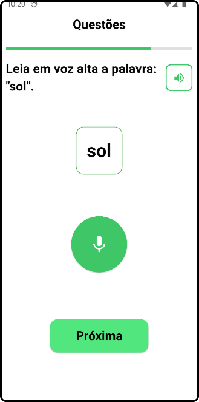
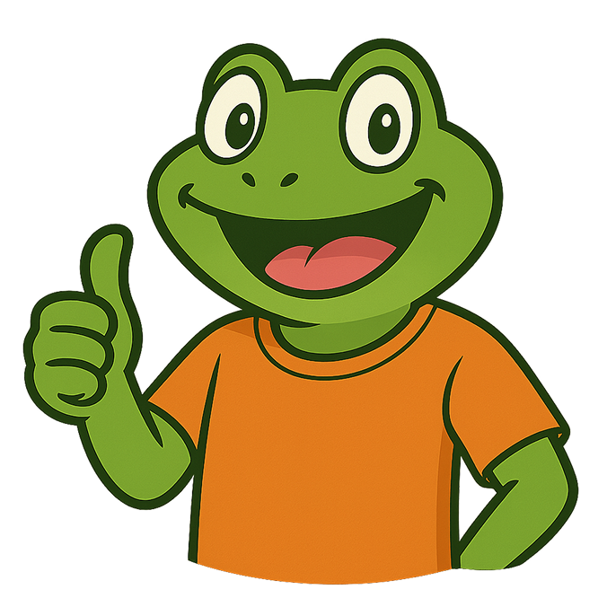

Gratuito, divertido e importante para a leitura de crianças com dislexia
Acesse através do link abaixo para o download do aplicativo para dispositivos Android.
BaixarQuestões com diferentes níveis sensoriais

Questão Auditiva
Questões que estimulam a percepção auditiva, ajudando na identificação de sons e palavras.
Questão Visual
Atividades focadas no reconhecimento de letras, sílabas e formas, essenciais para a leitura.
Separação Silábica
Jogos interativos que ensinam a dividir palavras em sílabas de forma lúdica e eficaz.
Memória Fonológica
Desafios para fortalecer a memória de curto prazo, crucial para a compreensão da leitura.
O aprendizado vira uma grande aventura!
Com nosso sistema de gamificação, cada acerto vale moedas que podem ser usadas para desbloquear novos itens e customizar o cenário do jogo.
Melhore sua Leitura com Croac-Croac Dislexia
Baixar
